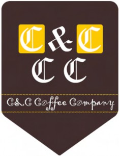
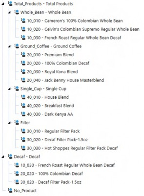

Introduction
Introduction
Never Write a Book
When OneStream sent out their call for authors, my immediate thought was, “Thank goodness I’m never doing that again. That’s someone else’s path to pain. Sucker.” This has nothing to do with OneStream; I have dissuaded others from writing books when I thought the concept flawed, and shut down nascent book projects when the logistics were impossibly complex and vendor support nonexistent. Many start to write a book, few finish. That is because writing a book is hard, in terms of time (your authors spent well over 500 hours combined on the one you are reading), effort (some of the use cases in this book are not simple, and the writing is never easy), and dedication (our full-time jobs of consulting and personal lives continue apace). Yet here I am, writing the introduction to book number three, and here is Celvin (I certainly warned him about the experience, hence “never write a book”), joining me in this endeavor. Why?
Introduction › Never Write a Book
The Market
One of the indicators of an established software product is an independent book market. Celvin and I were certainly aided by OneStream (more on this in the acknowledgments) in the preparation and writing of this book, but our contract is with P8tech, publishing under the OneStream Press imprint. The topics, content, and writing are ours alone, the hallmarks of independent work; this is a book about OneStream, not a OneStream book. One of the measures of an established and successful software company is that it encourages an independent and outwards-facing publishing environment. OneStream Planning, The Why, How and When is that philosophy manifested in print.
Introduction › Never Write a Book
Community
A software company’s community might be broadly defined as an ecosystem of product evangelism peopled by customers and consultants, gently prodded and pushed by the vendor. Companies foster community only when they are confident that their tool – inevitably imperfect like everything else in this world – can withstand the scrutiny of those outside that company’s walls. Those inside a community gain much from its existence: discussion and discovery by their peers is different from a vendor’s outreach in its focus and depth. Once fostered, a community becomes the most credible advocates of a product, for they have no direct monetary link to its success. Instead, it is part of their professional development, interest, and passion.
While there must be some way to measure community size, growth, and participation and its relation to sales, it is surely an inexact one because the geeks that advocate a product are not the ones who sign contracts; they are the ones that influence the contract signers. OneStream Press is a key component of that community. Your authors have probed deeply into OneStream’s functionalities, identified missing functionality, proposed solutions, and incidentally gored a few oxen here and there. That is independence, and that is what a confident software company fosters. If it needs saying at this point, OneStream is confident about its product, and rightly so. Our expectation is that – as OneStream grows – so too will its community in influence and importance. Celvin and I were enthusiastic evangelists in our Prior Product Lives and are just as much today.
Introduction › Never Write a Book
Education
The ultimate purpose of a community is education: how do I best use this feature, what can I do with the product that I would never have dreamt of, why on earth would anyone want to do that? Documentation and training are key components of understanding and comprehension, but they are necessarily constrained by budget and resources as they try to serve customers of different skill levels (Excel-has-always-been-great-why-would-I-want-to-change to performance management veterans), product focus (planners are not overmuch interested in account reconciliations), and roles (administrators versus consultants). Members of OneStream’s community, those who live in OneStream day in and day out, are the ones who best understand its potential and usage. A vendor’s focus and direction, while ultimately important, are tangential to what that community values the most and expends its efforts on. OneStream’s practitioners – your authors and you – are the ones who know where the gaps and opportunities are when it comes to expanding everyone’s understanding and mastery of OneStream.
Ultimately, the desire to discover, understand, and evangelize the power and potential of OneStream is why Celvin and I spent so much time on this book. We are driven by the opportunity to help others better understand the product, help it grow in functionality and features, and ultimately evangelize OneStream.
You, Gentle Reader, would not be here if education was not your passion as it is ours. This book is for all of us.
Introduction
The How Drives the Why; The Why Drives the How
Your authors have been driven bonkers by the “Just figure it out” attitude because that direction drives a practice of finding out how (often from other practitioners) to do something for a specific use case with little understanding as to why it is done. In the shortest of all possible terms, this approach works because, after all, if we do not know how to do something, there is little value in understanding why. But this approach is short-sighted, for once the immediate solution is at hand, applying it beyond that instance may not make sense or lead to degraded performance or even result in an incorrect answer. If we only understand how to do something, we cannot truly understand what it does, when it should be used, where it is best applied, why it should be done, and ultimately how best to do it. Once we understand why a component or feature or block of code does what it does, the how flows easily from that understanding.
Our philosophy, both within this book and without, has been to first understand that all-important why, and then attempt to tell you the how. We hope that you will come to share this belief, if you do not already do so, and use it in your approach to all OneStream questions both large and small.
Introduction
Cameron & Celvin Coffee Company
Writing this book required a simple sample application. Yes, OneStream’s sample application GolfStream can be downloaded from the OneStream Marketplace readily enough, but GolfStream is big and must serve many masters as it attempts to encompass almost every bit of a very broad product. Moreover, it is in the hands of OneStream. What would happen to our use cases and code if it substantially changed? Would we have to change our use cases if so? Could we modify them and meet our publisher’s (self-imposed by Yr. Obt. Svts.) deadlines without losing what little left we have of our minds?
The answer then was to come up with a very basic sample application that was just complex enough to support our work and no more, hence the sobriquet – A Very Basic Sample, shortened to AVBS.
Celvin and I seem to be caffeine addicts. I, for one, have consumed a somewhat alarming quantity of coffee during the writing of this book and hope to return to a normal two or three cups per day afterwards. Given our love for coffee and the need to have some kind of business to underpin that simple application, having AVBS describe the Cameron & Celvin (or Celvin & Cameron if you prefer) Coffee Company was an easy decision. For any readers actually in the coffee business, try not to laugh too much as we, alas, have never had the opportunity to work for a coffee business and are only enthusiasts.
Introduction
A Very Basic Sample
When the seed of writing this book was planted, we jointly agreed that the book had to center around use cases – the why that is embedded in this book’s essence is almost impossible to convey and to understand without them.
Introduction › A Very Basic Sample
C&CCC
Creating an application is easy enough, the process of what makes sense in that application, what you, Gentle Reader, can relate to was the challenge. Everyone (practically) loves coffee, your authors love coffee, so why not have the business that drives the book’s use cases be a small yet sophisticated coffee company that has embraced OneStream for its financial planning? The resulting imaginary customer: Cameron & Celvin’s Coffee Company.

Figure 0.1
Introduction › A Very Basic Sample
Dimensions
To our international readers, sorry, but simplicity and Americans’ well known and deserved provinciality resulted in an Entity Dimension that consists only of the states and geographical regions of the United States. Perhaps AVBS will grow in the future to encompass the rest of the world, but not in this book.
All of the required Dimensions are there – OneStream will not allow anything else – with UD1/Products being the only custom Dimension. While some of the product names are silly, they are used throughout the book. Extensibility was added halfway through the writing as we discovered we needed it for use cases. The below is the primary hierarchy.

Figure 0.2
The customized required Dimensions, such as Flow and Accounts, are as complex (read simple) as the use cases required. Flow is stupendously simple in its single Member of EndBal_Input.
Account comes from a database we both used and loved in another life.
Introduction › A Very Basic Sample
Workflow
As with the rest of AVBS, it supports our book use cases and nothing more. Do not use them as a blueprint for a sophisticated real-world OneStream Planning application. Do use them as we did to explore OneStream’s functionality.
Introduction › A Very Basic Sample
The Data
Much of it is easy and is limited, sometimes tremendously so, in its size as our goal was not to create a data warehouse (or go through the effort of creating randomized data to support it) but instead to illustrate our use cases.
Introduction › A Very Basic Sample
The Users
C&CCC’s Finance, Planning, and Analysis team is populated by some of the smartest, nicest, and funniest people we know. Every one of them gave permission to use their first names. Natalie, Jessica, Sandra, Neviana, Amy, and Tiffany: thank you all. You are now for good, or for ill, immortalized in print.
Introduction › A Very Basic Sample
Downloading AVBS For Fun and Profit
Download AVBS from: www.OneStreamPress.com/planning
Introduction
Acknowledgments
Introduction › Acknowledgments
Ours
Every quest or journey demands some sacrifices. At the end of it, some leave you in pain, some in sadness, some in profound happiness.
When Nicole Belanger and Peter Fugere reached out to us on August 25th 2020 about writing a book on OneStream, our reaction was excitement tempered with a fair measure of trepidation. With the resolve that can only come from an inability to learn from painful experience (Cameron) and naiveté (Celvin), we started the process of writing. Thank you for considering the two of us, and thank you for initiating the process. We are proud to be a part of the OneStream Press journey. Our competitive nature is well pleased by being the first two non-OneStream employees to write a book on OneStream.
To our OneStream technical editors, Jon Golembiewski and Mel Lenhardt, and key contacts, Tony Dimitrie and Peter Fugere, your patience, encouragement, and willingness to engage with two rather opinionated authors was inspirational and key to our completing this book. The care and time you took in your chapter reviews was evident and made the book better for it. The discussions we had were wide-ranging and exciting. We hope that we can continue the collaboration in the future.
Amanda Goralewski was our liaison with OneStream. With luck, our requests drove you only a tiny bit bonkers with their stupidity.
Our publisher, James Lumsden-Cook, took a chance on two complete unknowns. We pray that you find the gamble worthwhile. To our development team at OneStream Press, with luck, our grammar made you reconsider your cousins-across-the-sea’s reputation for illiteracy.
To all of you: a book is a significant investment of blood, sweat, and tears, but we persevered and believe we have come up with a result worthy of that effort. This book could not exist without your encouragement and support.
Introduction › Acknowledgments
Celvin’s
To my family: the missed bedtime stories, the family dinners that I barely participated in because I was obsessing over my latest use case, I am sorry and profoundly grateful that you gave me the leeway and time to write this book with your sacrifice. I would like to thank my beautiful wife, three wonderful kids, and the two doggies for letting me pursue this journey. The unanswered questions, the blank stares, those cray crays are all going away (or at least I will no longer plead writing as an excuse). Thank you again.
However, my partner in crime, my best buddy, my older-smarter-shorter-not-so-handsome brother from a completely different set of parents – Cameron Lackpour warned me about the horror and pain involved in writing a book. I still signed up for it because he agreed to become a part of that journey. Thank you, Cameron, for the endless-yet-fruitful discussions, for the numerous edits to make my chapters better, and for not driving down here and strangling me.
Now that I am at the end of this journey, like Cameron, I will not allow painful experience to stop me from doing this again. The smell of freshly-printed paper has always filled me with joy, and this time it is personal.
Introduction › Acknowledgments
Cameron’s
My thankfully ever-patient and most certainly long-suffering family gave me all of the encouragement and succor any obsessed geek author could ever hope for and have, no matter how little deserved. I could not have written this book and would not have attempted to do so without you. Thank you all.
And – for those who know me, this will be of little surprise – I would like to express my thanks to Pickle and Peanut, the cats, who enjoyed my 12 immobile hours a day staring at a screen and thus provided a warm lap to sit in. I promise to feed you more stupendously unhealthy treats in the future, praying that they are not really the feline equivalents of potato chips.
Lastly, I want to thank my younger-brother-from-a-completely-different-father-and-mother, aka Celvin Kattookaran: working with you was a joy. Your patience as you explained difficult concepts to Someone Who Doesn’t Quite Get It But Just Might If Given a Chance, your thoughtful critiques of my chapters, your infectious enthusiasm for so ambitious a project made this book possible.
Thank you.
Introduction
Errors and Omissions
Any and all mistakes are ours and ours alone.
Cameron Lackpour and Celvin Kattookaran, November 2021